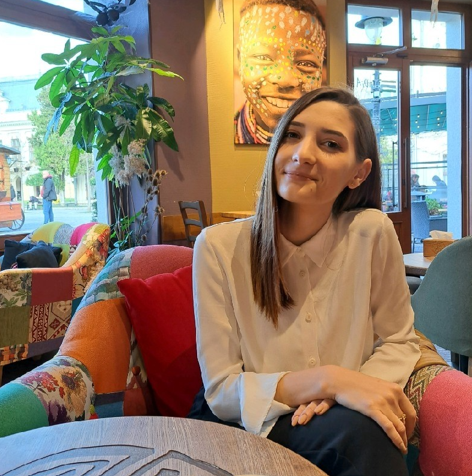

Lupu Cosmin-Daniel
Am lucrat la:
- Gestiunea git
- Setupul initial al proiectului
- Serviciul de useri (logare, inregistrare)
- Gestionarea bazelor de date
- Designul aplicatiei
- Functionalitatile de login, register si verificare cu jwt
- Functionalitatile de edit profile si schimbarea parolei
-
Adaugarea de date in baza de date prin intermediul bannerului
- Pagina de movie details impreuna cu design-ul sau
- Routing ul in aplicatie
- Documentatie OPENAPI

Ghiorghi Ioana-Cristina
Am lucrat la:
- Pagina Movie List
- Filtrarea filmelor in functie de gen, rating, anul lansarii
- Crearea unui search bar
-
Paginarea filmelor si posibilitatea de a alege cate filme sa apara
in pagina
Am contribuit la:
- Pagina Login, Register, Overview - partea de frontend
- Crearea paginii My Profile - partea de frontend
- Crearea paginii 404 Not Found personalizata
Lungeanu Razvan
Am lucrat la:
- Pagina de Index
- Pagina de About
- Pagina de Statistici
- Footer
- Modulul de Administrare
- Design responsive pentru paginile de mai sus
- Introducerea datelor din API in baza de date
- Exportarea statisticelor, crearea lor
- Endpointuri pentru paginile enumerate mai sus
-
Am contribuit la crearea functiilor in service-ul si repository-ul
de la Movie